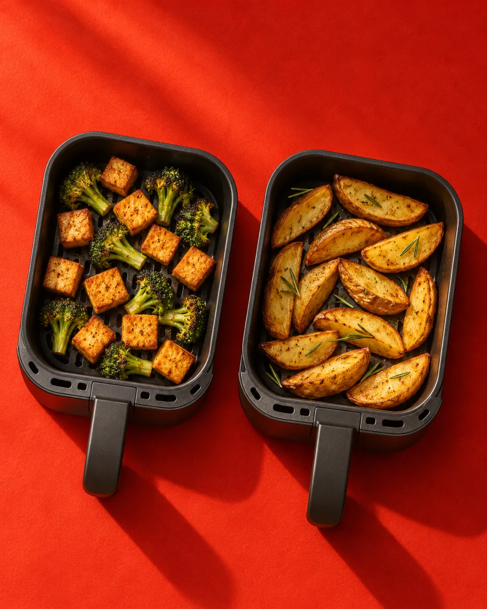

A cooking skill for your AI assistant
What goes in which drawer?
Tell your assistant what you’re cooking. Get a plan for what goes where, how to set each drawer and how to get dinner ready together.
One or two drawers Codex and Claude Code

How It Works
-
Tell It What You Have
Give it the food, what’s frozen or fresh, and your fryer model if you know it.
-
Get a Drawer Plan
See what can cook together, how much room it needs, and when a second batch makes sense.
-
Cook and Check
Use the suggested settings and check each food at the end. If your fryer supports it, set the drawers to finish together.
Try Asking
Include the packet directions if you have them. The skill uses them to work out when the foods can share a setting.
I have chilled firm tofu, fresh broccoli and frozen potato wedges. Plan dinner for my two-drawer air fryer. I’d like to load both drawers once and have everything finish together. Tell me what goes where first.
Install the Skill
Download the ZIP and open the skills folder. Copy the whole air-frying folder into your assistant’s skills folder. Keep any existing copy until you’ve reviewed the differences.
Codex
Copy to ~/.agents/skills/. Start a new session and type $air-frying with your request.
Claude Code
Copy to ~/.claude/skills/. Start a new session and begin your request with /air-frying.
Privacy & Control
The site has no analytics or forms. The skill gives you a plan and you operate your air fryer. Optional update checks contact GitHub and keep their state on your machine. You choose when to install an update.